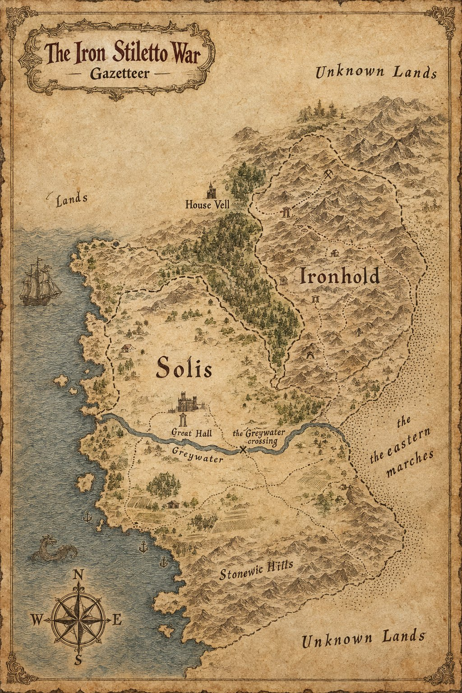

Gazetteer of the Iron Stiletto War

About the Map
The country of Case 4417, drawn from the sea inland: Solis on the coast, Ironhold in the mountains to the north-east, and the forest line and the river between them. It is filed here as a gazetteer, not as a subject or a record. The places below are the ones printed on the map; each note is drawn from the case file, and a place the file never mentions is said to be unfiled rather than guessed at.
Places
- Unknown Lands
- Printed along the map's northern and southern margins. No case file describes them.
- House Vell
- Shown as a keep north of Solis. House Vell commits to Solis in secret, and its Lord is the brother of Isolde of Ironhold, a connection that matters more to the war than she first realizes.
- Ironhold
- The mountain country of Duke Aldous and Duchess Beatrice, whose steward Osric has kept its accounts for three dukes and whose Lord of the Western Passes is Fenric. Beatrice's humiliation at the Great Concord is the war's original grievance.
- Solis
- The coastal kingdom of Queen Aurelia, where Vane arrives disguised as a wandering hermit and leaves a pair of chrome heels, and where Chancellor Wren has served three monarchs. The siege reaches its walls at the war's end.
- Great Hall
- Shown beneath Solis's castle. Duke Aldous goes into the war's final confrontation here unarmed and offering terms, and is killed in it.
- Greywater
- The river that runs west to the sea below Solis's castle. No case file names it.
- The Greywater crossing
- Marked with a cross on the river's course. No case file describes it.
- Stonewic Hills
- The hills in the south. No case file describes them.
- The eastern marches
- The country of Baron Corvin, Baron of the Eastern Marches, patient and outwardly neutral while he works every side of the war he helps prolong.
Appears In
The country of The Iron Stiletto War (Case 4417).